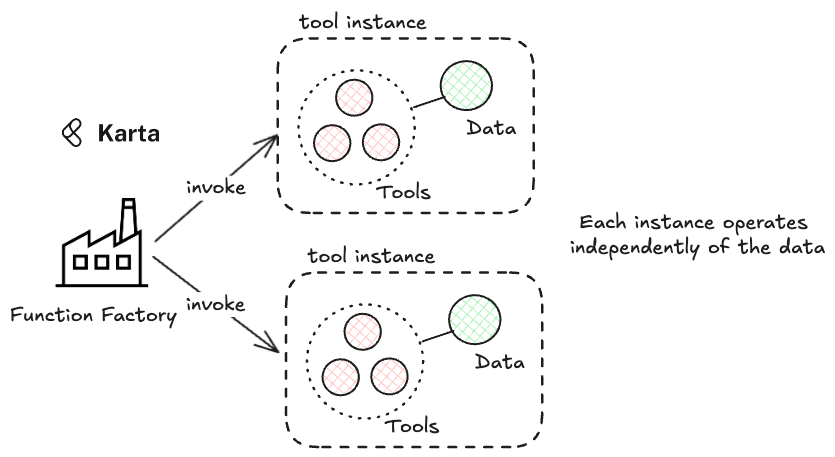

Understanding the Basics¶
The karta context engine provides users with multiple artefacts for each domain what will allow them to test their agents on finely curated datasets on complext tasks. There are five artefacts that are provided to users and these can be integrated into their agents. This document will provide a brief overview of the artefacts and how to use them. Before diving in here are a few definitions:
A task is a collection of implied instructions for the agent coupled with expected actions and outputs. Instructions are implied because the agent will have to discover the best way to sequence tasks and achieve the desired outcome.
A tool is a function that can be bound to the agent.
A factory is a callable function that can be used to generate a fresh set of specific artefacts (more on this later). Users can invoke the factory to get a fresh copy of the artefacts.
A Domain roughly corresponds to a distinct industry or sector. For example, ecommerce, healthcare, finance etc. We expect that the knowledge base, tools and tasks will be significantly different for across domains.
Artefacts and their functions¶
The context engine provides users with five artefacts:
Tasks - A list of deeply annotated tasks.
Data Factory - A callable that returns the complete dataset for a domain.
SOPs - A dictionary that contains the Standard Operating Procedures (SOPs) for a domain.
Knowledge Base - The complete knowledge base for a domain.
Tool Factory - A callable that returns a list of tools for a domain and a fresh instance of the dataset for the tools to operate on.
Initializing a Context Engine¶
Artefacts are vended via a context engine. Taking the example of the ecommerce domain, the context engine for ecommerce would be initialized as follows:
from karta_benchmarks.namespaces.domains import Domains
from karta_benchmarks.context_engine import ContextEngine
## Create the context engine
context_engine = ContextEngine(domain=Domains.ECOMMERCE)
"""
======== Created Context Engine for ecommerce ========
"""
This will internally load the artefacts for the ecommerce domain and make them available to the user.
Tool Factory¶

Tools are categorized into 3 types:
Read Tools - Tools that are specific to a domain and are used to retrieve data from the database.
Update Tools - Tools that are specific to a domain and are used to update the database. These tools change the state of the database.
Helper Tools - Tools that help the agent in general tasks and are not domain specific.
Tools are made available to the agent via the tool_factory artefact.
tool_instance = context_engine.artifacts["tool_factory"]()
The tool_dictionary is a dictionary that contains all the tools for the domain. The keys are the tool names and the values are the tool functions.
The read_tools and update_tools are lists of read and update tools that are specific to the domain.
Note that the tool factory returns a fresh set of tools with each call. This means that the tools created by the factory will operate on their own instance of the dataset. This helps evaluate the agent repeatedly on the same task with a fresh dataset each time. There are also some generic helper funtions that are useful.
The get_db_state() function returns the current state of the database after tools have acted upon it.
The get_call_history() function returns the history of calls made to the tools and their arguments.
The reset_call_history() function resets the call history.
The vend_schemas() function returns the schemas for the domain. This is useful if the agent needs to know each dataset in detail.
All tools have docstrings that are brief. The package documentation has more details on each tool.
tool_instance = context_engine.artifacts["tool_factory"]()
print(tool_instance)
The above code will print the tool dictionary.
{
'tool_mapping': {
'get_db_state': <functionfactory.<locals>.get_db_stateat0x10171c2c0>,
'get_call_history': <functionfactory.<locals>.get_call_historyat0x1017cd6c0>,
'reset_call_history': <functionfactory.<locals>.reset_call_historyat0x1017cd4e0>,
'calculate_date_difference': <functionfactory.<locals>.calculate_date_differenceat0x1017cd580>,
'get_customer_by_id': <functionfactory.<locals>.get_customer_by_idat0x1017cd620>,
'get_customer_by_email': <functionfactory.<locals>.get_customer_by_emailat0x1017cd760>,
'vend_schemas': <functionfactory.<locals>.vend_schemasat0x101707f60>,
'get_current_date_and_time': <functionfactory.<locals>.get_current_date_and_timeat0x10171c540>,
'get_package_details': <functionfactory.<locals>.get_package_detailsat0x10171c220>,
'issue_gift_card': <functionfactory.<locals>.issue_gift_cardat0x1017cd440>,
'get_item_details': <functionfactory.<locals>.get_item_detailsat0x1017cd3a0>
},
'read_tools': [
<functionfactory.<locals>.calculate_date_differenceat0x1017cd580>,
<functionfactory.<locals>.get_customer_by_idat0x1017cd620>,
<functionfactory.<locals>.get_customer_by_emailat0x1017cd760>,
<functionfactory.<locals>.get_current_date_and_timeat0x10171c540>,
<functionfactory.<locals>.get_package_detailsat0x10171c220>,
<functionfactory.<locals>.get_item_detailsat0x1017cd3a0>
],
'update_tools': [
<functionfactory.<locals>.issue_gift_cardat0x1017cd440>
]
}
We can now try calling some tools. We will use the tool_mapping to get to the appropriate function. Remember that the lists of read_tools and update_tools can be used directly and bound to an agent.
tool_instance["tool_mapping"]["get_customer_by_id"](customer_id="CUST001001")
Will return the following:
{
"customer_id" : "CUST001001",
"is_rewards_and_benfits_member" : false,
"first_name" : "Rahul",
"last_name" : "Gupta",
"email" : "rahulgupta@example.com",
"phone_number" : "+91 99999 88888",
"date_of_birth" : "1994-01-01",
"gender" : "Male",
"account_creation_date" : "2023-12-22",
"last_order_date" : "2024-05-17",
"is_active" : true,
"is_email_verified" : true,
"is_phone_verified" : true,
"is_fraud_flag" : false,
"active_orders" : ["ORD001998"],
"active_returns" : []
}
We can update the state of the database using the issue_gift_card tool.
tool_instance["tool_mapping"]["issue_gift_card"](customer_id="CUST001001", amount=100)
"""
<success> Gift card GFT000001 issued to customer with ID CUST001001 with amount 100 </success>
"""
This should have updated the database. We can verify this by calling the get_db_state() function.
# Get the updated state of the database
updated_state = tool_instance["tool_mapping"]["get_db_state"]()
# Retrieve payment details for the customer
payment_details = updated_state["payment_methods"]["GFT000001"]
We should see the following:
{
'issued_at': '2024-03-25 10:00:00',
'customer_id': 'CUST001001',
'payment_method_type': 'GIFT_CARD',
'amount_remaining': 100
}
To get the call history, we can use the get_call_history() function.
call_history = tool_instance["tool_mapping"]["get_call_history"]()
The call history should look as follows:
[
{
'function_name': 'get_customer_by_id',
'arguments': {
'customer_id': 'CUST001001'
}
},
{
'function_name': 'issue_gift_card',
'arguments': {
'customer_id': 'CUST001001',
'amount': 100
}
}
]
Tasks¶
The tasks are a list of deeply annotated tasks that the agent is expected to perform.
tasks = context_engine.artifacts["tasks"]
print(tasks[0])
The first task should look like this:
{
"task_name": "delayed_headphones_delivery",
"task_classification" : "L1",
"task_parameters": {
"tool_use_multiplicity": 3,
"customer_proficiency": 2,
"sub_task_count": 4,
"cost_of_failure": 2,
"conversation_length_potential": 4,
"domain_knowledge_richness": 3,
"scope_for_alternate_closure" : 3
},
"judgement_criteria" : """The agent must first retrieve the customer details using the customer email.
Then, it must retrieve the item details using the item id.
Then, it must retrieve the package details using the package id.
Then having determined that the package is delayed, it must issue a gift card to the customer after apologizing for the delay.
""",
"task_complexity_score" : 21,
"customer_prompt" : """Today is the 25th of March 2024.
You are Rahul Gupta (rahul_gupta@example.com).
You placed an order for a pair of wireless headphones five days ago.
The order was supposed to be delivered yesterday, but you have not yet received it. The tracking status still shows ‘In Transit.’
You donot have an order id.
Initially, you are slightly concerned but remain polite.
You start by simply asking when your order will be delivered.
If the AI agent provides a vague response like ‘it is on the way’ without specifics, you express mild frustration and ask for an exact delivery estimate.
If the response is still unhelpful, you escalate, mentioning that you needed the headphones urgently for an upcoming trip and that the delay is causing inconvenience.
Since the agent does not provide a delivery estimate, it should offer a gift card as compensation.
If you accept the offer, the issue is resolved. Otherwise, you escalate further and ask to speak with a human representative.
""",
"expected_outputs" : ["Sound Blaster", "GFT000001"],
"mandatory_actions" : [
{
"tool" : "issue_gift_card",
"arguments" : {
"customer_id" : "CUST001001",
"amount" : 120
}
}
]
}
Each task contains the following:
task_name - The name of the task.
task_classification - The classification of the task L1, L2 or L3
task_parameters - The parameters of the task based on which the task is scored.
judgement_criteria - The judgement criteria for the task. This can be used to judge the performance using LLMs as judges.
expected_outputs - The expected outputs for the task. These are outputs that the agent must have displayed to the user when performing the task.
mandatory_actions - The mandatory actions for the task. Without performing these actions, the task cannot be considered complete.
customer_prompt - The prompt that is given to user who will be interacting with the agent.
Data Factory¶
The data factory is a callable that returns the complete dataset for a domain.
data = context_engine.artifacts["data_factory"]()
Each time the data factory is called, it returns a fresh copy of the dataset.
SOPs¶
The SOPs are a dictionary that contains the Standard Operating Procedures (SOPs) for a domain. Each SOP name is the key in the return dictionary and the content of the SOP is the value.
sops = context_engine.artifacts["sops"]
print(sops)
Knowledge Base¶
The knowledge base is a string that contains the complete knowledge base for a domain as raw text.
knowledge_base = context_engine.artifacts["knowledge_base"]
print(knowledge_base)